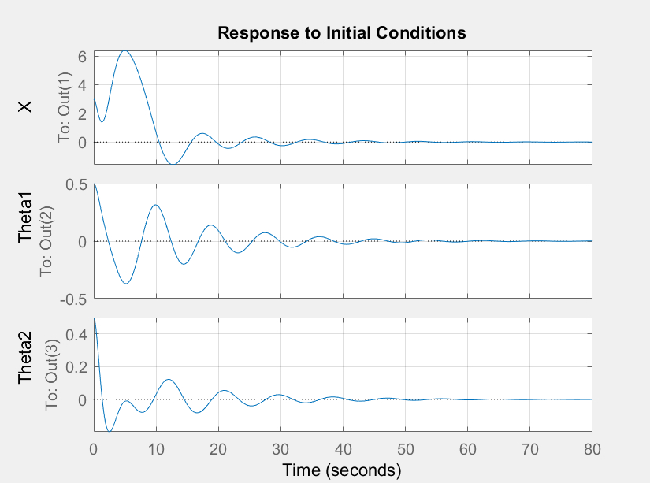
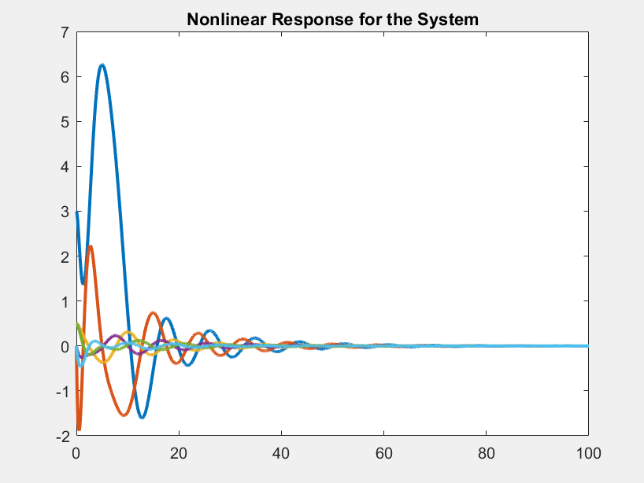
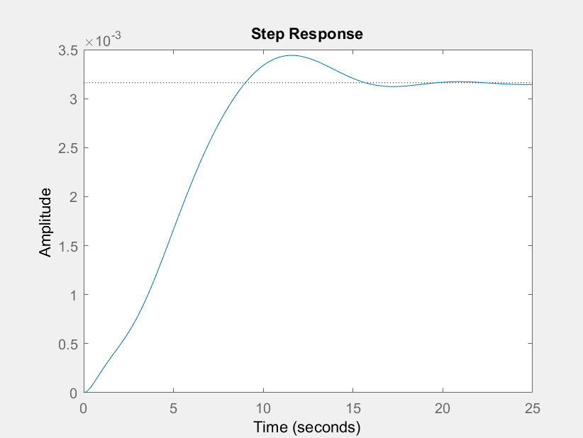
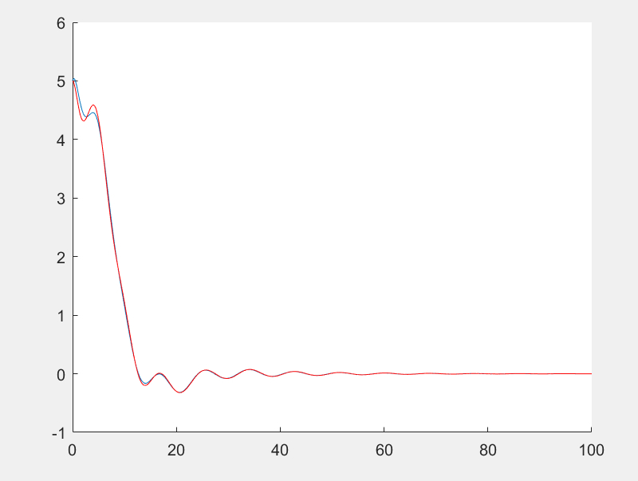
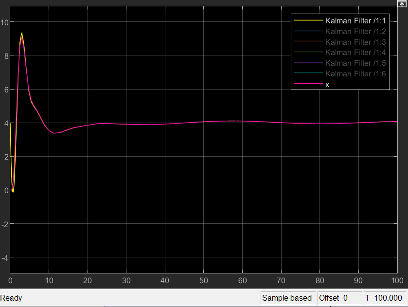

This project deals with stabilizing and controlling a non-linear double crane system. There are two components to the given problem statement for this project.
 source: Project guidelines ENPM667
source: Project guidelines ENPM667
First, The equations of motion for the system(shown above) are determined. The presented non-linear system is then linearised and an LQR controller is designed to stabilize the obtained linearized system. It is then tuned to stabilize the initial non-linear system.
LQR under initial conditions
LQR Control for Non Linear System
The next part, for each of the observable output vectors, a Luenberger Observer is designed for the linear system with the given initial conditions and a step response. Finally, an LQG controller is designed to stabilise the non linear system using a Kalman Filter along with the existing LQR control.
Luenberger Observer output for x(t) with step input
The Luenberger observer was designed only on the smallest output vector. And using it, an LQG Control for x(t)-smallest output vector was developed for the Linear system.
LQG Controller (SIMULINK) for Non linear system - x(t)
Dependencies: MATLAB
This project was developed for the final project in Control of Robotic Systems course. As seen from the graphs for linearised system, the LQR optimal control was achieved in about 45 seconds whereas the LQG optimal control was achieved in 40 seconds. The project can be accessed from here : GitHub Repo